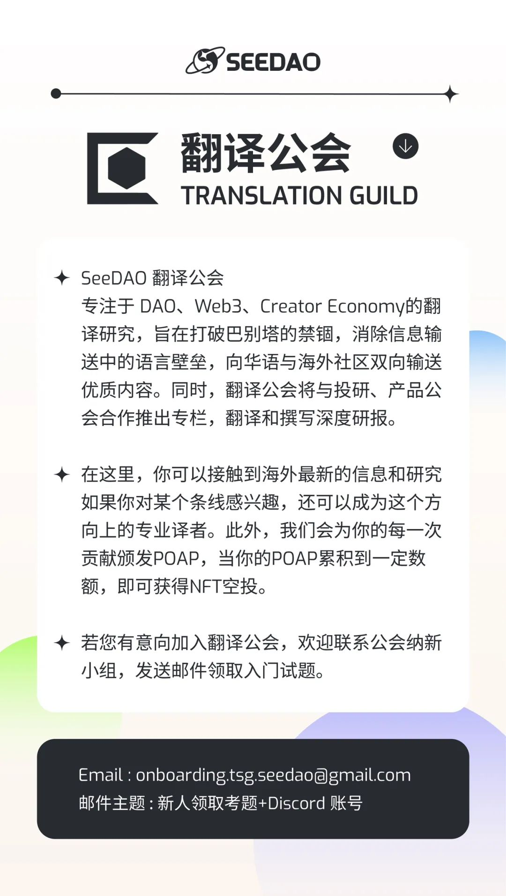

「点击底部“阅读原文”即可跳转原文链接」
自从 chatGPT 和 GPT-4 发布后不久，关于 AI 将如何变革所有行业（包括 Web 3）的文章就层出不穷。多个行业的开发人员都报告说，通过将 chatGPT 作为辅助工具来自动化执行诸如生成代码样板、执行单元测试、创建文档、调试和检测漏洞等任务，生产力被显著提高了 50% 到 500%。本文将探讨 AI 如何赋能新奇有趣的 Web 3 案例，但重点还是关注在 Web 3 和 AI 之间的互利关系。很少有技术可以有潜力显著影响 AI 的发展轨迹，Web 3 就是其中之一。
在 AI 和 web 3 的交叉领域有一些有趣的创业想法。在 Alliance，我们希望支持创始人在这个领域创建产品。我们鼓励这个领域的开拓者来联系 我 或者 Qiao Wang ，来获得这篇专题的反馈和讨论。
尽管有巨大的潜力，现在的 AI 模型仍然面临着一些挑战，这些挑战主要围绕数据隐私，私有模型执行的公平性和几乎可以假乱真的内容产生和传播。现有的一些 web 3 的技术可以精准定位这些问题。
为 ML 训练生成私有数据集
web 3 可以帮助 AI 的一个领域就是协作创建用于机器学习（ML）的私有数据集，也就是用于数据集创建的 PoPW 网络。大量的数据集对于生成准确的 ML 模型是必不可少的，但是数据集的创建可能是一个瓶颈，特别是在需要私人数据的场景，比如使用 ML 进行医疗诊断。病人数据相关的隐私问题会是个很大的难题，因为访问病人的数据对于训练这些模型是必须的，但是出于对个人隐私的担忧，患者可能不愿意分享他们的病历。为了解决这个问题，病人可以使用可验证的匿名病历来保护他们的隐私，同时仍然允许在 ML 训练中使用这些数据。
然而这样一来，匿名病历的真实性又成为了一个问题，因为虚假的数据会显著影响模型的结果。为了解决这个两难境地，零知识证明（ZKPs）可以用来检验匿名病历的真实性。病人可以生产 ZKPs 来证明匿名数据确实是自己原始数据的拷贝，即便已经移除了他们的个人身份信息（PII）。这样，病人就可以把自己的匿名病历和对应的 ZKPs 提供给感兴趣的组织，甚至可以在不牺牲他们隐私的情况下获得收益。
使用私有数据进行推论
当前 LLMs（Large Language Models 大语言数据模型） 的一个主要弱点是他们对私有数据的处理。举例来说，OpenAI 在用户使用 chatGPT 的时候收集用户的私人数据，使用这些数据来增强模型的训练效果，这种做法导致了敏感信息的泄露。三星 就是个例子。零知识（zk）技术可以帮助解决当 ML 模型根据私人数据进行推论的时候出现的一些问题。这里我们考虑两种情形：开源模型和私有模型。
对于开源模型，用户可以下载模型到本地，然后使用自己的私人数据运行模型。一个例子就是 Worldcoin 升级 World ID 的计划。在这个例子中，Worldcoin 需要处理用户的私人生物识别数据，即用户的虹膜扫描，来为每个用户创建一个名为 IrisCode 的独一无二的识别码。这样，用户可以把他们的私人生物数据保存在他们的设备中，下载用于生成 IrisCode 的 ML 模型，在本地运行生成过程，然后生成一个表明他们的 IrisCode 已经成功生成的 ZKP。这个生成证明在保护数据隐私的同时，保证了生成过程的真实性 。针对 ML 模型有效的 zk 证明机制，例如像 Modulus Labs 开发的那些，对于这种应用场景至关重要。
另一种情景出现在用于推论的机器学习（ML）模型是私有的情况下。任务变得更加困难，因为本地推论无法被选用。但是，ZKPs 可以有两种可能的方式提供帮助。第一种就是使用 ZKPs 对用户数据进行匿名，再把匿名数据发送给 ML 模型，就像在数据集创建案例中一样。另一种方法是对私人数据进行本地预处理，然后再把预处理的结果发给 ML 模型。使用这个方法，预处理步骤隐藏了用户的私人信息，使得这些信息无法被重建。用户生成一个 ZKP 证明预处理步骤的正确执行，私有模型的剩余执行工作可以远程在模型拥有者的服务器上完成。这里的例子，像包括可以分析病人病历以进行潜在诊断的 AI 医生，以及可以评估客户私人财务信息的财务风险评估算法。
内容真实性识别及伪造技术打击
chatGPT 可能抢走了专注于生成图片，音频和视频的生成式 AI 模型的曝光度。然而，这些模型现在已经可以进行几可乱真的逼真伪造。最近 由 AI 生成的 Drake 歌曲就是这些模型可以做到什么程度的一个很好的例子。由于人类天生会相信他们看到和听到的东西，这些逼真伪造构成了重大威胁。有相当一部分的初创公司试图用 Web 2 的技术来解决这个问题。然而，像数字签名这类的 Web 3 技术在这个问题上可以做的更好。
在 Web 3 当中，用户的交互，即交易，是由用户的私钥签名来证明合法性。同样的，内容，无论是文字、图片、音频或者视频，也可以由创作者的私钥签名来证明其真实性。任何人都可以使用创作者在他们的个人网站或者社交媒体账号上提供的公钥来验证这些签名。Web 3 网络已经搭建好了这个应用场景所需要的所有的基础设施。Fred Wilson 讨论了内容与公钥联合如何有效阻止错误信息。许多有声望的风投已经将他们现有的社交媒体资料（如Twitter）或去中心化社交媒体平台（例如Lens Protocol和Mirror）与一个加密的公共地址关联起来，从而增强了使用数字签名作为内容认证方法的可信度。
尽管这一概念很简单，但在改善用户体验方面仍有很多工作要做。例如，为了给内容创建数字签名，需要自动化这个过程，以为创作者提供流畅的体验。另一个挑战是如何生成已签名数据的子集，例如音频或视频片段，而无需重新签名。许多现有的 Web 3 技术在解决这些问题上各具特色。
私有模型的信任最小化
另外一个 Web 3 可以帮助 AI 的领域就是， 当一个私有 ML 模型被作为服务提供的时候，最大限度地减少服务提供者之间的信任成本。用户可能需要确认他们使用的就是他们购买的服务 [4]，或者确保 ML 模型的公平执行，即相同的模型被用于所有的用户。ZKPs 可以提供这样的保证。在这样的架构中，ML 模型的创作者生产代表 ML 模型的 zk 电路。然后，这个电路可以在用户推理需要时用来生成 ZKPs。生成的 ZKPs 可以发送给用户进行验证，也可以发布到为用户处理验证过程的公链上。如果 ML 模型是私有的，独立的第三方可以验证所使用的 zk 电路是否代表了该模型。当模型的执行结果具有高风险时，ML 模型的信任最小化方面就尤其有用。比如：
ML 医疗诊断
在这种情况下，病人提交他们的医疗数据给 ML 模型来进行潜在的诊断。病人需要确保目标 ML 模型和他们的数据正确适配。模型运行过程生成一个证明 ML 模型正确执行的 ZKP。
贷款信用度
当评估信用度的时候，ZKPs 可以确保一个申请人提供的所有财务信息已经被银行和金融机构考虑在内。而且，ZKPs 可以通过证明对于所有的用户使用的是同一个模型来确保公平性。
保险索赔处理
现在的保险索赔处理是手工操作，带有主观性。在考虑保险条款和索赔细节情况下公平的评估索赔，ML 模型可以做的更好。和 ZKPs 结合，这些被用于索赔处理的 ML 模型可以被证明已经考虑到了所有的保险条款和索赔细节，并且在同样的保险条款下的所有索赔使用的是同一个模型。
解决模型创建的中心化问题
创建和训练 LLMs 是一个费时费钱的过程，需要特定领域的专业知识，专用的计算基础设施和数百万美元的计算成本。这些特征可能导致强大的中心化实体的产生，例如 OpenAI，它可以通过限制对其模型的访问来行使凌驾于用户之上的专权。
考虑到这些中心化的风险，人们对于 Web 3 如何可以从 LLM 模型创建的各个方面推动去中心化有重要的讨论。一些 Web 3 的倡导者提议将去中心化计算作为对抗中心化的一种方法。这个论点认为去中心化计算是一种更便宜的替代方案。然而，我们认为这可能不是与中心化玩家竞争的最好方式。去中心化计算的缺点是，由于不同异构计算设备之间的通信成本，机器学习训练速度可能会慢 10-100 倍。
或者，Web 3 项目可以专注于创建 PoPW 风格的独特且有竞争力的 ML 模型。这些 PoPW 网络同样可以收集数据来构建独有的数据集用于训练这些模型。朝这个方向发展的一些项目包括 Together 和 Bittensor。
为 AI agents 提供支付手段和执行渠道
过去的几周见证了人工智能代理（AI agents）的兴起，这些 AI agents 能够利用大型语言模型（ LLMs）推断完成某个目标所需要的任务，甚至执行这些任务来完成这个目标。这波 AI agents 浪潮从 BabyAGI 开始，并很快席卷到到包括 AutoGPT 在内的高级版本。这里的一个重要预测是，AI agents 在处理某些任务中将变得更加专业。如果有一个专门的 AI agents 市场存在，那么 AI agents 可以寻找，雇佣和付钱给别的 AI agents 来执行特定的任务从而完成一个主要的目标。在这个过程中，Web 3 网络为 AI agents 提供了理想的环境。在支付方面，AI agents 可以配备加密货币钱包来接受其它 AI agents 的汇款或者付款给其它 AI agents。更进一步，AI agents 可以接入加密网络来达到分配资源的去许可化。例如，如果一个 AI agent 需要存储数据，那么它可以创建一个 Filecoin 钱包，然后付费使用 IPFS 上的去中心化存储。AI agents 也可以分配来自去中心化网络（比如 Akash） 上的资源从而执行特定的任务，或者甚至于扩展自己的执行范围。
防止 AI 侵犯隐私
考虑到训练出一个性能优异的 ML 模型需要大量的数据，我们可以大胆假设，任何的公开数据最终都会为 ML 模型所用来对个人行为进行预测。更进一步的说，银行和金融机构可以建立自己的 ML 模型，并基于用户的金融数据训练这些模型从而能够预测用户未来的金融行为。这可能是对隐私的重大侵犯。缓解这种威胁的唯一方法就是金融交易的默认隐私化。这种隐私化可以通过使用像 zcash 或者 Aztec 支付这样的私人支付区块链，以及像 Penumbra 和 Aleo 这样的私人 DeFi 协议来实现。
链上游戏
为非编程游戏玩家生成机器人
链上游戏，像 Dark Forest，创造了一种独特的范例，那就是玩家可以通过开发和部署机器人来完成游戏任务从而获得优势。这种游戏方式的改变将那些不会编程的玩家拒之门外。然而，LLMs 可以改变这一状况。LLMs 可以很好地理解链上游戏逻辑，允许玩家在无需编写代码的情况下创建符合自己游戏策略的机器人。像 Primodium 和 AI Arena 之类的项目正在致力于在他们的游戏中上线人类玩家和 AI 玩家。
机器人战斗，下注和打赌
链上游戏的另一种可能性是完全自主意识的 AI 玩家。在这种情况下，玩家是一个 AI agent，例如 AutoGPT，它使用 LLM 作为后端，并可以访问外部资源，例如访问互联网和潜在的初始加密货币资金。这些 AI 玩家可以以 Robot Wars 的方式参赌下注。这为投机和押注这些赌注的结果打开了一个市场。
为链上游戏创造一个真实的 NPC 环境
现在的游戏对于非玩家角色（NPCs）关注甚少。NPCs 的动作行为不多，并且在推动游戏进程方面作用有限。鉴于 AI 和 Web 3 的协同效应，我们有可能创造出更具吸引力的由 AI 控制的 NPC，打破常规，增加游戏的趣味性。这里的一个潜在挑战是如何在引入有意义的 NPC 角色动态的同时，最小化这些活动相关的吞吐量，即每秒交易数（TPS）。NPC 活动所需的 TPS 过高，可能会导致网络拥塞并对实际玩家造成不良的用户体验。
去中心化社交媒体
现如今去中心化社交平台所面临的众多挑战之一，就是他们无法提供区别于现有中心化平台的独特用户体验。而与 AI 的无缝集成可以提供 Web 2 产品所无法提供的独特感受。例如，人工智能管理的帐户可以通过分享相关内容、评论帖子和参与讨论来帮助吸引新用户加入网络。AI 帐户对于新闻聚合也很有用，可以汇总用户感兴趣的前沿讯息。
去中心化协议的安全性和经济设计测试
基于大型语言模型（LLM）训练的人工智能代理（AI agents）可以定义目标、创建代码并执行这些代码，这一趋势为去中心化网络的安全性和经济稳健性提供了实际测试的机会。在这种情况下，AI agents 被直接用来勘察协议的安全性或经济平衡性。这些人工智能代理可以首先审查协议文档和智能合约，识别出潜在的弱点。然后，人工智能代理可以独立竞争，执行机制来攻击协议，以最大化自身的利益。这种方法模拟了协议在启动后所经历的真实环境。基于这些测试结果，协议的设计者可以审查协议并修补其中的漏洞。迄今为止，只有专业公司，如 Gauntlet 等，具备技术能力来为去中心化协议提供这样的服务。然而，通过在 Solidity、DeFi 机制和先前的攻击机制上进行训练的 LLM，我们期待 AI agents 也可以提供类似的功能。
用于数据索引、指标提取的 LLMs
尽管区块链的数据是天然公开的，但对该数据进行索引并提取有用的信息一直是一个持续的挑战。这个领域的一些参与者像 CoinMetrics ，专门从事数据索引和构建复杂指标进行出售，其它参与者像 Dune 则专注于对原始交易的主要组件进行索引，然后把指标的提取这个工作通过社区众包出去。随着近期 LLM 的发展，数据索引和指标提取显然即将被彻底改变。Dune 已经意识到了这个威胁，并宣布了一个包含 SQL 查询解释和基于 NLP 的查询潜力等组件的 LLM 路线图。然而，我们预计 LLMs 的影响要远大于此。这其中一个可能就是基于 LLM 的索引，这种情况下，LLM 模型可以与区块链节点直接交互，为特定指标来进行数据索引。初创公司，像 Dune Ninja 已经开始探索用于数据索引的创新性 LLMs 应用。
开发者加入新的生态系统
不同的区块链都想吸引开发者到自己搭建的生态系统中来开发应用。Web 3 开发者的活动数据一直是衡量一个生态系统是否成功的重要指标。开发者的一个主要的诉求就是当他们在新的生态系统中开始学习和开发的时候获得支持。各个系统都已经组织了专门的开发者服务团队，投入了数百万美元，来支持开发者探索自己的生态系统。在这方面，新兴的 LLMs 在解释复杂代码、发现程序漏洞甚至生成文档方面成果斐然。训练有素的 LLMs 可以和人的经验互补，显著提高开发者服务团队的生产力。例如，LLMs 可以用来创建文档、教程、回答问题，甚至在黑客松中通过提供代码样板或者创建单元测试来给开发人员提供帮助。
改进DeFi协议
通过将 AI 集成到 DeFi 协议的逻辑中，许多 DeFi 协议的性能将被显著提高。将 AI 融入 DeFi 的主要瓶颈是在链上运行 AI 的成本过高。AI 模型可以在链下运行，但以前，这无法验证模型的执行情况。然而，随着像 Modulus 和 ChainML 项目的出现，让链下执行情况的验证成为了可能。这些项目允许在链下执行 ML 模型，同时控制链上成本。像 Modulus，链上的费用仅限于验证模型的 ZKP。在 ChainML 中，链上成本是向去中心化 AI 执行网络支付的预言机费用。
一些 DeFi 应用也可以从 AI 集成中受益。
1、AMM 流动性补足，即更新 Uniswap V3 的流动性范围。
2、使用链上和链下数据对债务头寸进行清算保护。
3、复杂的 DeFi 结构化产品，其中保险库的机制是由 AI 金融模型而不是固定策略定义的。这些策略包括 AI 管理的交易、贷款或期权。
4、考虑到不同链不同钱包的先进链上信用评分机制。
我们相信 Web3 和 AI 在文化和技术上是兼容的。相较于 Web2 对于机器人程序的排斥，Web3 凭借其无需许可的可编程特性，使 AI 得以蓬勃发展。从更广泛的意义上，如果你将区块链视为一个网络，我们设想 AI 来主导这个网络的边界。这适用于，从社交媒体到游戏的各种消费应用程序。到目前为止，Web 3 的边界大部分是由人来界定的。人们发起并签署交易，或者部署具有固定策略的机器人来代表他们采取行动。随着时间的推移，我们将在网络的边界处看到越来越多的 AI agents。AI agents 将通过智能合约与人类以及彼此相互之间进行互动。这些互动将带来新颖的消费者体验。
